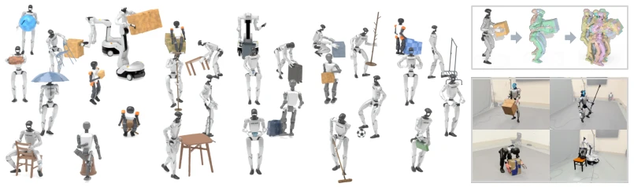
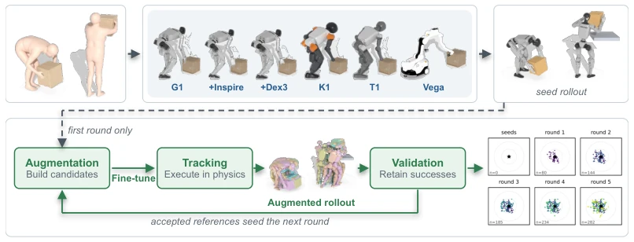
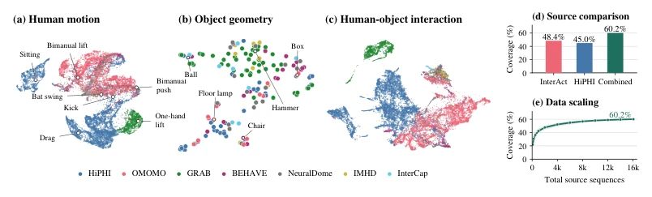
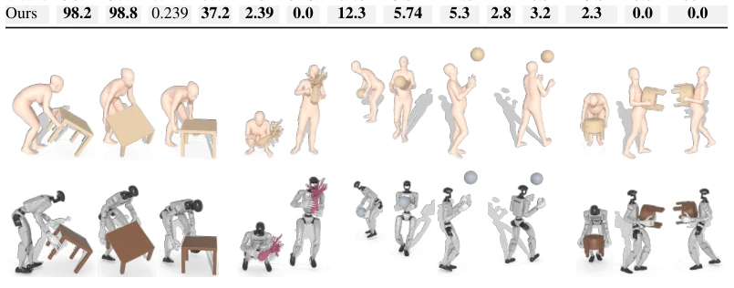
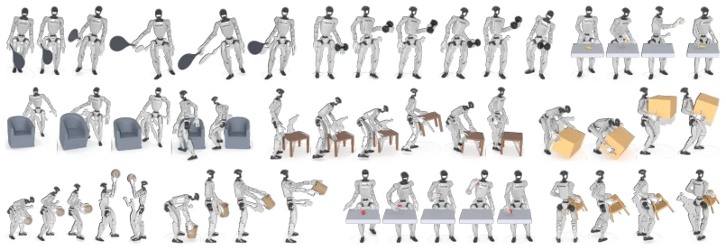
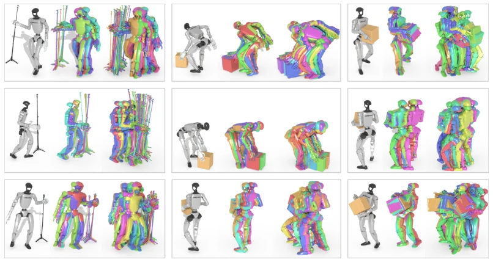
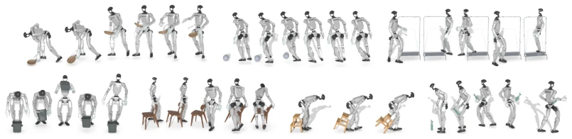
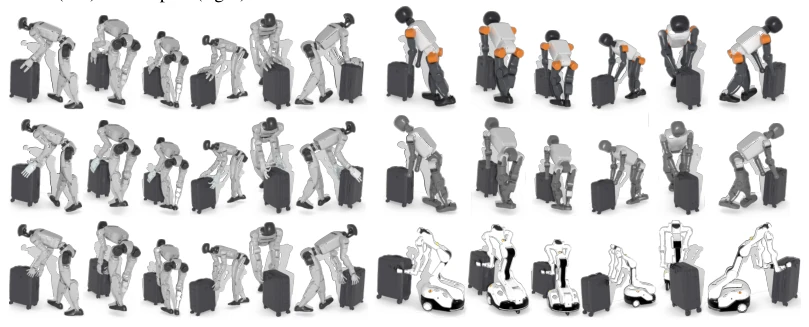
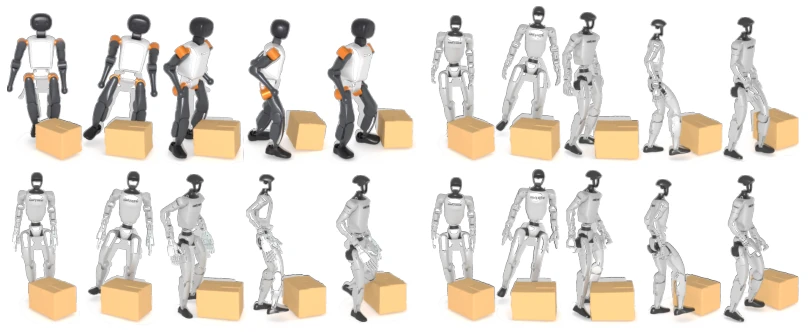

InterMimicGen attempts to use the "self-evolution" gimmick to solve the persistent problem of data scarcity in humanoid robot loco-manipulation; this "snowball" strategy is indeed smarter than simply piling up data. It transforms human motion capture data into robot references through fine retargeting, then uses a "generalist" policy to imitate, and finally "filters" out more variants through continuous policy fine-tuning, truly building a data flywheel. However, this is essentially "playing with mud in simulation"; although the authors claim it can transfer to real robots, whether the physical uncertainties on real robots (such as friction coefficients, deformation) can be fully covered by this simulation-based "self-evolution" remains questionable. Additionally, this strategy of "only retaining successful variants", while ensuring quality, may also cause the robot to fall into "local optima", learning only a few specific variants while ignoring a broader exploration space. Overall, this is a solid engineering work with extremely high data utilization efficiency, but in terms of theoretical "generalizability", it may not have completely shaken off the suspicion of "overfitting simulation".
研究动机Motivation
人形机器人的 loco-manipulation（移动操作）面临的核心痛点是：人类动作捕捉数据虽然丰富，但极其稀疏且异构，无法直接覆盖机器人执行所需的所有物理可行变体。现有的 retargeting 方法（如 Weave, OmniRetarget）往往难以同时兼顾长时程的全身协调和毫米级的精细手部接触（Cao et al., 2026b; Yang et al., 2026）。更致命的是，传统的跟踪策略（tracker）在面对微小的姿态或物体位置偏移时，往往因为缺乏物理可行性而失败，导致“演示”与“执行”之间存在巨大的鸿沟。之前的工作如 MimicGen 虽然尝试了数据增强，但多依赖独立的运动合成器，对于涉及物体交互的复杂场景往往不够鲁棒（Mandlekar et al., 2023）。InterMimicGen 旨在解决这一矛盾：如何让数据随着策略的学习而“生长”，而不是依赖静态的、覆盖不全的演示库，从而让机器人学会在物理约束下执行多样化的交互任务。
The core pain point facing humanoid robot loco-manipulation (mobile manipulation) is: although human motion capture data is abundant, it is extremely sparse and heterogeneous, unable to directly cover all physically feasible variants required for robot execution. Existing retargeting methods (such as Weave, OmniRetarget) often struggle to balance long-term whole-body coordination and millimeter-level fine hand contact simultaneously (Cao et al., 2026b; Yang et al., 2026). More fatally, traditional tracking strategies (trackers) often fail due to lack of physical feasibility when facing minor pose or object position offsets, leading to a huge gap between "demonstration" and "execution". Previous work such as MimicGen attempted data augmentation, but mostly relied on independent motion synthesizers, often not robust enough for complex scenarios involving object interaction (Mandlekar et al., 2023). InterMimicGen aims to resolve this contradiction: how to make data "grow" with the learning of the policy, rather than relying on a static, incomplete demonstration library, thereby enabling the robot to learn to execute diverse interaction tasks under physical constraints.

Figure 1: InterMimicGen grows a finite set of human interaction captures into an expanding repertoire of executable robot motions. Left: One formulation turns the captures into executable motions across diverse objects, tasks, and robots, from humanoids to a wheeled mobile manipulator. Top right: Self-evolving motion imitation. A single motion grows round by round into many variants. Bottom right: The resulting motions run on real robots.
方法Method
InterMimicGen 构建了一个闭环的“自我进化”数据引擎，整体流程分为数据构建、精细 Retargeting、通才策略训练和迭代增强四个阶段。首先，整合 InterAct 和 HiPHI 等异构数据集，构建包含 1.6 万条动作的基准库。核心创新在于两阶段的 Retargeting：第一阶段通过交互网格（interaction mesh）和手指对抗项（finger opposition term）进行粗粒度全身解算，确保长时程的物体关系和支撑；第二阶段利用 Adam 优化器进行接触级清理，消除穿透和抖动，保留毫米级接触精度。接着，训练一个基于物理的“通才”跟踪策略（Generalist Tracker），该策略通过 PPO 在并行环境中学习，能够泛化到不同物体和机器人构型。最关键的“自我进化”环节：策略对现有参考数据进行微小的任务保持性编辑（如改变物体位置或身体姿态），生成候选变体；策略在这些变体上微调，并在仿真中执行；仅保留执行成功且符合物理约束的变体作为下一轮的种子。这一过程不断迭代，使得参考数据集和策略能力同步增长，最终实现从稀疏人类演示到大规模可执行机器人动作的转化。
InterMimicGen constructs a closed-loop "self-evolution" data engine, with the overall process divided into four stages: data construction, fine Retargeting, generalist policy training, and iterative enhancement. First, integrate heterogeneous datasets such as InterAct and HiPHI to build a benchmark library containing 16,000 actions. The core innovation lies in two-stage Retargeting: the first stage performs coarse-grained whole-body calculation through interaction mesh and finger opposition term, ensuring long-term object relationships and support; the second stage uses the Adam optimizer for contact-level cleaning, eliminating penetration and jitter, retaining millimeter-level contact accuracy. Next, train a physics-based "generalist" tracking strategy (Generalist Tracker), which learns via PPO in parallel environments and can generalize to different objects and robot configurations. The most critical "self-evolution" link: the policy performs minor task-preserving edits on existing reference data (such as changing object positions or body poses) to generate candidate variants; the policy fine-tunes on these variants and executes in simulation; only variants that execute successfully and comply with physical constraints are retained as seeds for the next round. This process iterates continuously, causing the reference dataset and policy capabilities to grow synchronously, ultimately achieving the transformation from sparse human demonstrations to large-scale executable robot actions.

Figure 2: Top: Reference construction. Human-object motion capture is retargeted into whole-body dexterous references, which a physics-based tracker imitates to produce seed rollouts. Bottom: Self- evolving motion imitation. Each round augments verified references into candidates, fine-tunes the tracker on them, executes the candidates in physics, and retains only successful rollouts as seeds for the next round; Bottom right: UMAP embeddings (Sec. E.1) of accepted augmentations expanding.

Figure 3: Our data has broad coverage. (a-c) UMAP embeddings of human motion, object geometry, and human-object interaction of our collection, colored by source dataset. (d) How well our collection covers external motions from GRAIL (Xie et al., 2026), MOVIN (Jang et al., 2023), and ELMO (Jang et al., 2024); a motion is covered when one of our sequences is close to it (Sec. E.1). (e) The same coverage as the number of our source sequences grows.
Experiments were conducted on 6 different configurations of humanoid robots (including G1, K1, Vega, etc.), comparing baselines such as Weave and OmniRetarget. In terms of Retargeting quality, the method significantly reduced object penetration and foot sliding, with hand contact retention rate improved to 98.2%. In Tracking experiments, the generalist strategy achieved success rates close to specialized strategies on 15 object interactions, proving its generalization ability. The core findings come from iterative enhancement experiments: after 5 rounds of self-evolution, the verified reference data volume grew by over 100 times, and the evolved policy could execute over 98% of the augmented data, while the frozen policy could hardly execute new variants, proving that "learning" is the key to data growth. Finally, in real robot testing, the method successfully transferred tasks such as moving boxes and dragging suitcases, demonstrating the effectiveness of Sim-to-Real.

Figure 4: Qualitative evaluation on retargeting. Captured human motion (top) and our G1 with Inspire hands reference (bottom), across interactions from different datasets.

Figure 5: Physics-based tracking across objects. Executed rollouts on G1 with Inspire hands for a diverse set of objects.

Figure 8: More executable variants. As in Figure 6, for nine further captures: each group shows the original reference followed by the verified augmentations accumulated by round 1 and by round 5.

Figure 9: More retargeted interactions on G1 with Inspire hands.
其他图片Other Figures

Figure 11: Retargeting across embodiments. One suitcase interaction retargeted to G1 with Dex3, Inspire, and non-dexterous hands (left, top to bottom) and to Booster K1, Booster T1, and Dexmate Vega (right, top to bottom).

Figure 14: Physics-based tracking across embodiments. A box-lifting reference executed by specialist trackers on Booster K1 (top left), G1 with non-dexterous hands (top right), G1 with Inspire hands (bottom left), and G1 with Dex3 hands (bottom right).